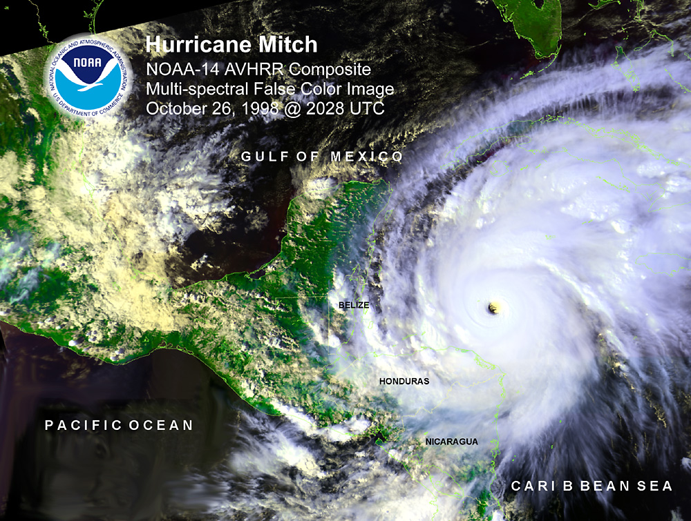

Yucatan Peninsula Hurricanes
Week 4 - Discussion section
In this discussion section you will wrangle historical data about hurricanes at the Yucatan Peninsula in Mexico. In this discussion section, you will:
- Practice breaking down a question into accessible data wrangling steps
- Choose appropriate packages and methods to carry out your analysis
- Practice finding additional guidance online to carry out your data wrangling plans
Setup
General directions
About the data
In this discussion section we will use historical data about hurricanes in the Yucatan Peninsula [1].
The Yucatan Peninsula, located in southeastern Mexico and bordered by the Gulf of Mexico and the Caribbean Sea, is a region highly susceptible to hurricanes due to its geographic location. These intense storms bring strong winds, heavy rainfall, and storm surges that significantly impact both terrestrial and coastal ecosystems. Hurricanes can cause widespread deforestation, alter habitats, and disrupt biodiversity, affecting, among other habitats, mangroves and coral reefs.

This dataset includes information about the Saffir-Simpson hurricane category for each hurricane. The Saffir-Simpson scale is a widely used classification system that categorizes hurricanes based on their sustained wind speeds and potential for damage. Ranging from Category 1 to Category 5, the scale assesses the intensity of hurricanes, with Category 1 being the least severe and Category 5 representing catastrophic storms. Categories 3 and above are considered major hurricanes, capable of causing significant structural damage, flooding, and long-lasting environmental impacts.
1. Archive exploration
Take some time to mindfully look through the dataset’s description and metadata.
In your notebook: use a markdown cell to add a brief description of the dataset, including a citation, date of access, and a link to the archive.
2. Data loading and preliminary exploration
- We will be using the
hf071-01-hurricanes.csvfile. Agree with your team on how you will import this file to your notebook and store it in a variable nameddf.
CHECK IN WITH YOUR TEAM
MAKE SURE YOU’VE ALL SUCCESSFULLY ACCESSED THE DATA BEFORE CONTINUING
- Obtain preliminary information and explore this data frame using
pandasmethods.
3. Brainstorm
In this session we want to answer the following question:
How many hurricanes with Saffir-Simpson category 5 have been registered and what was their duration?
Individually, write down step-by-step instructions on how you would wrangle the
dfdata frame to answer the question. Do not code anything yet. Remember: It’s okay if you don’t know how to code each step. The important thing is to have an idea of what you’d like to do.Discuss your step-by-step instructions with your team. What do you see as potential challenges to implementing your plan?
As a team, select an initial data wrangling plan for answering the question.
4. Data wrangling
Use your plan as a starting point to answer the question.
- You may (or not) need to look online to carry out some of the steps in your plan. It is completely fine to seek help online! Resourceful troubleshooting is a key skill in data science.
- It’s ok if your initial plan changes as you work with the data and discuss challenges with your team! This brainstorm is to create a shared starting point.
5. Collect your code and explain your results
- In a new code cell, collect all the relevant code to create a streamlined workflow to obtain the final data to answer the question. Your code cell should:
- Only print the final results.
- Not include output from intermediate variables or checks.
- Not include methods or functions that do not directly contribute to the analysis (even if they don’t print anything ex:
df.head()). - If appropriate, combine methods using code chaining instead of creating intermediate variables.
- Comment your code following our class comments guidelines.
- Use appropriate line breaks and indentation to make code readable.
- Write a full sentence explaining your answer to the question in (3). Don’t forget to include units. You may also want to include any insights about the rest of the data for the Category 5 hurricanes.
BONUS: Visualize Saffir-Simpson categories across time
Create a scatter plot of the start date of the hurricanes against the Saffir-Simpson scale. Use
matplotlibto customize your graph, including updating the tick labels to be only 1, 2, 3, 4, and 5 since the Saffir-Simpsn scale does not take decimal values.Analyze your plot and write (in full sentences!) any trends that you observe.
Don’t forget to commit, pull, and push.